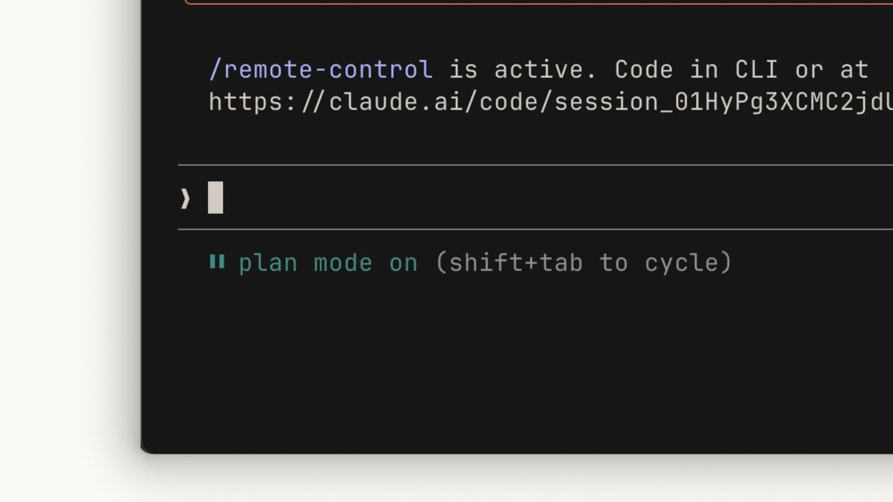
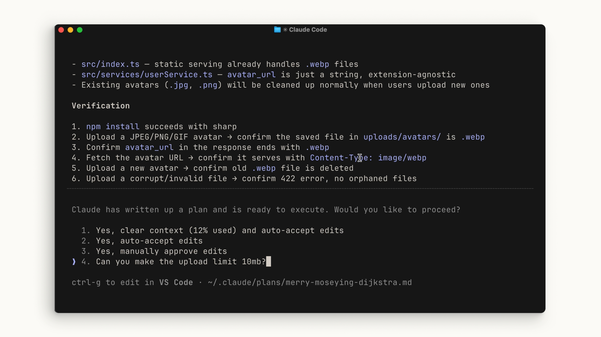
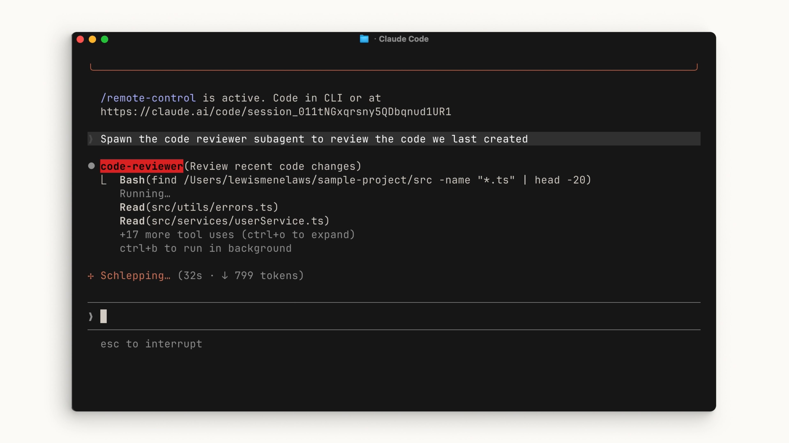

01 — Success criteria
成功基準を定義する
何をもって完了とするかを、計画を書く段階で明示する。基準がなければ、Claude は「たぶんできた」以上の判断ができない。
Lesson 04 / Anthropic 公式コース
03:11 · 全文書き起こし＋公式コース本文より
「Claude Code から一つだけ持ち帰るなら、これにしてほしい」と強調される、コース中で最も重要なワークフロー。これを飛ばして直接コードを書かせにいくから、あとで軌道修正が増える。
Claude Code から一つだけ持ち帰るなら、このワークフローにしてほしい——探索、計画、コード、コミット。
— 公式解説 / 00:03
そして直後に、これを守らない場合に何が起きるかが名指しされる。ほとんどの人はこれを飛ばして、いきなり Claude に貼り付けてコードを書かせにいく。その結果、あとから軌道修正が増える。
答え: A — ほとんどの人はこの2段を飛ばしていきなり書かせにいき、その結果あとから軌道修正が増える。
だからこそ4段のうち最初の2段（探索・計画）を守ることが、このワークフローで唯一持ち帰ってほしいポイントとされている。
最初の2つのステップを処理する最も速い方法はプランモードを使うこと。プランモードでは Claude はファイルを編集できない。実装にどう取り組むかの情報を集めるために、ファイルを読むだけになる。
入り方は、テキスト入力欄の下に plan mode と表示されるまで Shift + Tab を押す。

plan mode on が出ていれば、ファイルは編集されない。I need to add WebP conversion to our image upload pipeline. Figure out where in the pipeline it should happen, whether we need new dependencies, and how to approach it.
画像アップロードのパイプラインに WebP 変換を追加したい。パイプラインのどこで行うべきか、新しい依存関係が必要か、どう取り組むべきかを調べてほしい。
Claude は関連するファイルを読み、いくつかの Web 検索を実行し、行動計画を提示する。それを確認し、自分の基準を満たしているかどうかを判断する。満たしていなければ、特定の領域の追記や修正を頼めばいい。

~/.claude/plans/ に Markdown で保存され、ctrl-g でエディタを開いて直接編集もできる。ここが軌道修正に最適な場所。なぜなら、まだコードが1行も書かれていないから。計画の段階での修正は、書かれたコードを直す作業と比べて桁違いに安い。
なお、変更を加える意図がなくコードベースの概要だけがほしい場合は、プランモードに入らずにexplore サブエージェントを走らせるという手もある（「このコードベースを探索して」と頼むだけでいい）。サブエージェントの詳細は 07 サブエージェント で扱う。
答え: A — まだコードが1行も書かれていないため、計画段階での修正は書かれたコードを直す作業より桁違いに安い。
プランモードではファイルが編集されないので、この時点なら何度でも安く軌道修正できる。
計画が良さそうなら approve を選んで承認し、Claude にリストの項目を進めさせる。このとき、ファイル編集を自動承認させるか毎回確認させるかを選べる（03 の承認モード）。
Claude は計画を「完了」と見なす前に、できる限り自分でトラブルシューティングを行う。それでも時にはあなたの介入が必要になる。
ここでプランモードの利点がもう一つ効いてくる——実行が終わったあとも、どうやってその結果に至ったかというコンテキストが残っている。それが Claude の次の判断を導く材料になる。
答え: C — 実行が終わったあとも経緯のコンテキストが残り、それが Claude の次の判断を導く材料になる。
速度向上やテスト自動生成は本文に書かれていない。
この節の前提はひとつの文に集約されている——Claude が自分の結果に自信を持つためには、「正しい」とはどういうことかが明確でなければならない。
01 — Success criteria
何をもって完了とするかを、計画を書く段階で明示する。基準がなければ、Claude は「たぶんできた」以上の判断ができない。
02 — Tools
目標達成を助けるツールは、多くの往復を省く。例えば Web UI を作っているなら Claude in Chrome 拡張機能を入れておけば、Claude Code がブラウザタブを操作して UI を直接テストできる。
03 — Test suite
Claude が継続的に検証できるテストを用意する。Claude 自身にテストを書かせることもできるが、任せる前にそのテストが信頼できる真実の源であることを確認する——誤検知を避けるために。

Claude が同じ問題に何度もぶつかっているのに気づいたら、その解決策を CLAUDE.md に保存するよう頼む。次のセッションからは最初から知っている状態で始まる（→ 06 CLAUDE.md）。
答え: C — 「正しい」とはどういうことかが明確でなければ、Claude は自分の結果に自信を持てない。
この前提のもとで、成功基準の定義・ツールの追加・テストスイートという3つの工夫が並べられている。
自分でテストして結果に満足したら、プッシュのとき。ただしその前にひとつ挟む——コミットする前に、サブエージェントのコードレビュアーを走らせて作業内容を見てもらう。
理由がはっきり述べられている。サブエージェントはコードベースに新鮮な視点をもたらす。メインエージェントがセッション中に持っているかもしれない偏りを引き継がない。書いた本人にレビューさせない、という当たり前の原則を、エージェントの世界でも成立させる仕組み。

code-reviewer サブエージェントが起動し、独自にファイルを走査している。ツール使用は折りたたまれ、メイン側には結果だけが返る。そのあと、Claude に自分のスタイルでコミットメッセージを生成させる。そして、これを繰り返す。
答え: C — サブエージェントはコードベースに新鮮な視点をもたらし、メインエージェントの偏りを引き継がない。
「書いた本人にレビューさせない」という原則を、エージェントの世界でも成立させる仕組みとして説明されている。
4段がそれぞれ何のためにあるのか、一行ずつ定義し直す。
プロジェクトに必要な関連コンテキストを Claude に与える。
Claude が成功を測るために使う行動計画を作る。
最終的な結果に落ち着くまでの、あなたと Claude の間のやり取り。
コードをレビューしてプッシュし、次の機能に取りかかれるようにする。
計画はClaude のためだけにあるのではない。あなたが軌道修正できる場所を、コードが書かれる前に一箇所作るためにある。
YouTube の自動生成字幕から取得したもの。Claude MD（CLAUDE.md）など、音声認識の表記揺れがそのまま残っている。
If you take one thing away from Claude code, let it be this workflow: explore, plan, code, and commit. Without this, most people jump straight to pasting in Claude to write code, which means more course correcting later
on. The fastest way to handle step one and two is with plan mode. With plan mode, Claude can't edit files. It just reads files to gather research on how to tackle this implementation. To enter
plan mode, hit shift and tab until you see the plan mode under the text input. I need to add WebP conversion to our image upload pipeline. Figure out where in the pipeline it should happen, whether we need new dependencies, and
how to approach it. And Claude will read relevant files, do some web searches, and give you a plan of action. Make sure you review it and determine if it meets your criteria. Otherwise, I can ask it to add on or
revise some areas. Perfect. And this right here is the best place to course correct because it's before any code is written. You can also use explore without being in plan mode by just asking Claude to explore your
code base. Now, once the plan looks good, you can select approve to accept the plan and let Claude toggle all of the list items it provided. You can determine if you want Claude to auto accept the file
edits or ask every single time. Claude will do its best to troubleshoot your code base before considering the plan finished. But at times, you'll need to course correct. This is the benefit of
working with plan mode because after the plan is finished, we also have the context of how it got to the results to help it guide its next decision. In order for Claude to be confident in its results, it has to be clear on what
it deems correct. When writing your plan, make this explicit. Adding tools that will help Claude complete its goals will remove a lot of back and forth. For example, if you're building web UIs,
make sure you have the Claude and Chrome extension so that Claude code can control a tab and test out the UI before deeming it finished. In your project, include a test suite that Claude can continuously validate
on. Claude can even write tests for you. Before passing this off to Claude, make sure that the tests are a source of truth for you and your team to avoid any false positives. Quick tip, if you find Claude keeps
running into the same issues, ask Claude to save the solution to his Claude MD file. Now, once you have tested for yourself and are happy with the results, it's time to push your code. A tip before you
commit, run a sub agent code reviewer to look at your code. Then you get Claude to generate a commit message for you in your style. Rinse and repeat. >> [music] >> If you want to be effective with Claude
code, follow the explore, plan, code, and commit workflow. Exploration will give the relevant context Claude needs for your project. Plan will create a plan of action that Claude will use to determine if they are successful. Code
is the back and forth that you and Claude do before settling on the final outcomes of the plan. Commit helps you review and push your code so you can start on your next feature.